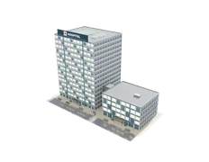
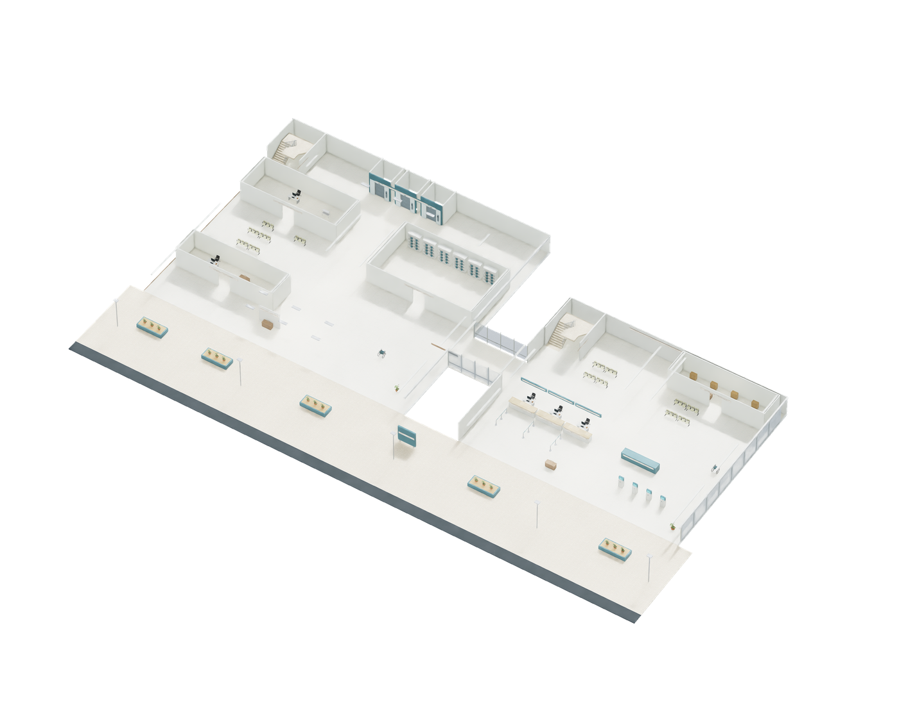

住院楼跨层到达
在住院楼原生楼层内从一楼到三楼，完整驶出电梯；明确楼栋身份，不混用门诊楼同号楼层。
通用任务 · 双本体验证待完成ENVIRONMENT 04 / 9
0415F INPATIENT / 5F OUTPATIENT
CONNECTED HOSPITAL CAMPUS
Both buildings begin at 1F and connect through glass galleries on floors 1–5. The outpatient ground floor contains registration, payment, insurance, self-service kiosks, triage, pharmacy and waiting areas. Floors 2–5 house general clinics, specialist examination, laboratory and imaging, health screening and rehabilitation. The inpatient tower contains nursing stations and equipped two-bed rooms, served by three elevators.
Selected hospital furniture: Open Robotics / Gazebo Fuel, Wan Yi Seow, Cole Biesemeyer and Roselle Carmen, under CC BY 4.0. Models converted, scaled and placed for this scene. Asset sources and full attribution.

INSIDE THE ENVIRONMENT
Select a level to explore its interior.

CAPABILITIES & EMBODIMENTS
通用任务面向 FWMiniPiper 与 G1；专用任务测试指定本体的特有能力。当前均为待验证设计，不表示已完成物理执行。
住院楼一楼接待，二楼内科、三楼外科、四楼心内科、十五楼康复交接；门诊楼二楼专科接待、四楼检验、五楼康复等。两楼同号层须带楼栋与站点身份。
在住院楼原生楼层内从一楼到三楼，完整驶出电梯；明确楼栋身份，不混用门诊楼同号楼层。
通用任务 · 双本体验证待完成在住院楼识别一部不可用电梯，选择可用梯到指定病区公共层；不进入病房、不配送物资。
通用任务 · 双本体验证待完成需绑定可复现停运或恢复初态、可见提示、可行时间预算和通行历史裁判；恢复不得依赖无限等待或策略可调用的调试接口。
尚未启用正式评测；需完成初态配置、成功判据及指定本体的完整物理轨迹验证。
接近入口使感应门开启，确认开口后完整通过，并离开感应区让门恢复；分别绑定两种本体。
通用任务 · 双本体验证待完成在一楼 Admissions Handover 的用品柜上抓持把手拉开铰链门，再关门；与自动入口门分别测试。
通用任务 · 双本体验证待完成已安装真实铰链柜门与把手；两种夹爪完整开合轨迹待验收。
尚未启用正式评测；需完成初态配置、成功判据及指定本体的完整物理轨迹验证。
按设施清单设置接待区域照明，门保持开放，不包含医疗设备操作。
通用任务 · 双本体验证待完成在本场景指定可达空调面板上观察初态，将开关、模式和设定值改为任务要求；至少一项需改变，其他设备不变。评分使用面板与控制器实际状态，不要求室温达到设定温度。
通用任务 · 双本体验证待完成需验证两种夹爪不误触相邻按键，并接入模式、开关和设定值裁判；不把按钮几何存在当作可按或热效果证据。
尚未启用正式评测；需完成初态配置、成功判据及指定本体的完整物理轨迹验证。
从一楼 Admissions Handover 取两件非医疗密封用品，分别送到住院楼二楼内科和三楼外科护士交接点。
通用任务 · 双本体验证待完成需按本任务配置动态物品、身份或数量标签、交接与暂放区域及指令专属历史判据；源站点存在不代表新任务初态已实现。
尚未启用正式评测；需完成初态配置、成功判据及指定本体的完整物理轨迹验证。
在住院楼十五楼康复交接点识别指定编号的轻型非临床代理件，送回一楼服务点。
通用任务 · 双本体验证待完成需按本任务配置动态物品、身份或数量标签、交接与暂放区域及指令专属历史判据；源站点存在不代表新任务初态已实现。
尚未启用正式评测；需完成初态配置、成功判据及指定本体的完整物理轨迹验证。
从一楼取两件用品，按任务开始时可见优先级送往住院楼四楼心内科和十五楼康复交接点；记录实际交付顺序。
通用任务 · 双本体验证待完成需按本任务配置动态物品、身份或数量标签、交接与暂放区域及指令专属历史判据；源站点存在不代表新任务初态已实现。
尚未启用正式评测；需完成初态配置、成功判据及指定本体的完整物理轨迹验证。
将非医疗用品从门诊一楼 Registration Assistance 分发到二楼儿科接待和四楼检验接待；先验证两楼连接与可达路线。
通用任务 · 双本体验证待完成需按本任务配置动态物品、身份或数量标签、交接与暂放区域及指令专属历史判据；源站点存在不代表新任务初态已实现。
尚未启用正式评测；需完成初态配置、成功判据及指定本体的完整物理轨迹验证。
在门诊五楼康复接待点回收指定非医疗包装件，送到一楼 Registration Assistance 的回收区；隔离其他用品。
通用任务 · 双本体验证待完成需按本任务配置动态物品、身份或数量标签、交接与暂放区域及指令专属历史判据；源站点存在不代表新任务初态已实现。
尚未启用正式评测；需完成初态配置、成功判据及指定本体的完整物理轨迹验证。
携一楼 Admissions Handover 的非医疗用品完成一次指定自动入口通行，再经电梯送到二楼内科交接点；入口路径与暂放面须共同可达。
通用任务 · 双本体验证待完成需按本任务配置动态物品、身份或数量标签、交接与暂放区域及指令专属历史判据；源站点存在不代表新任务初态已实现。
尚未启用正式评测；需完成初态配置、成功判据及指定本体的完整物理轨迹验证。
本场景暂无专用任务。两种本体均可使用上方通用任务候选。